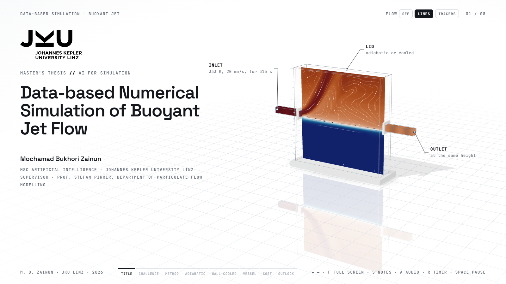
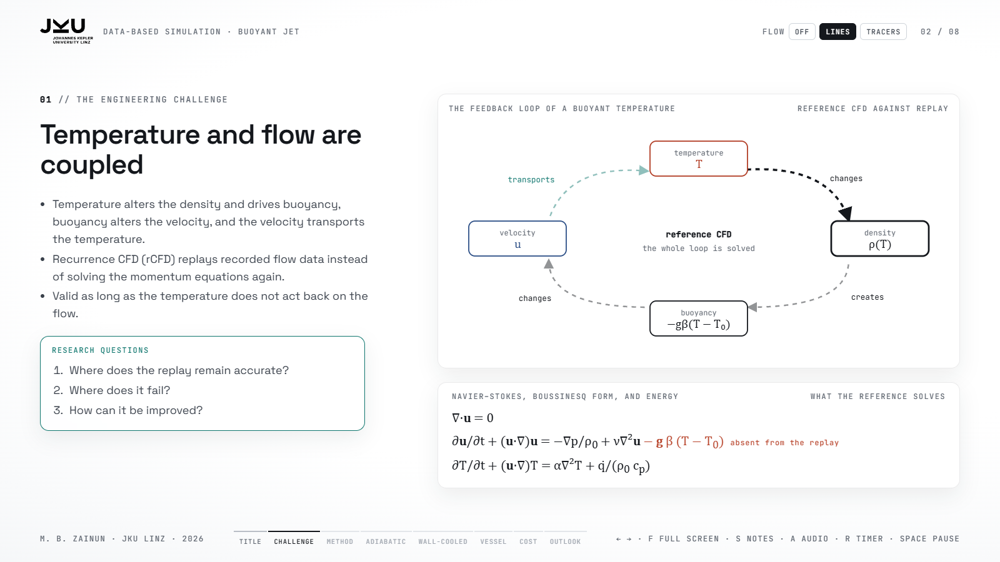
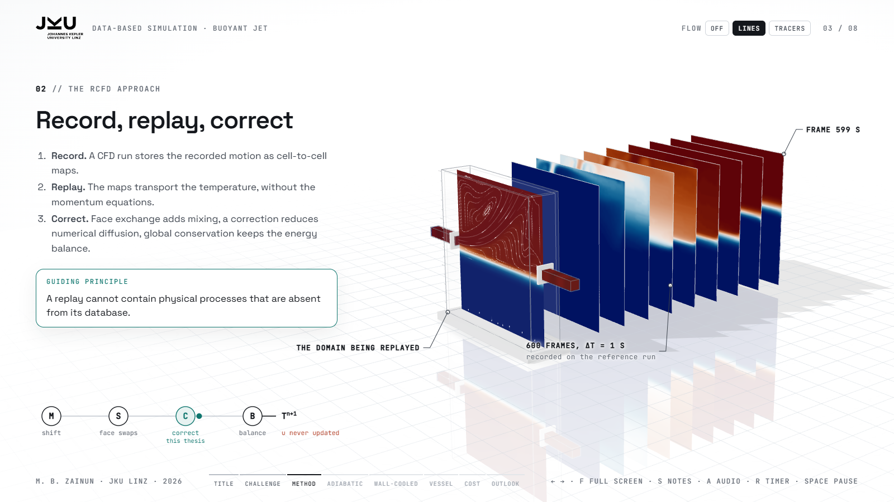
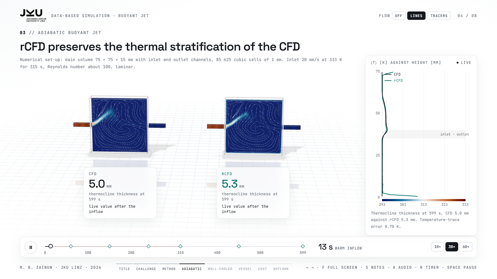
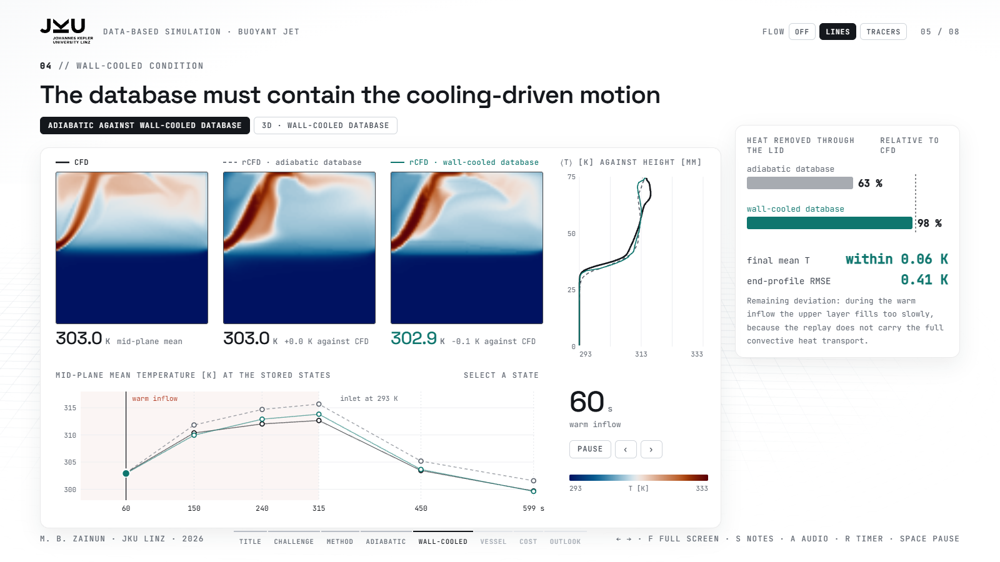
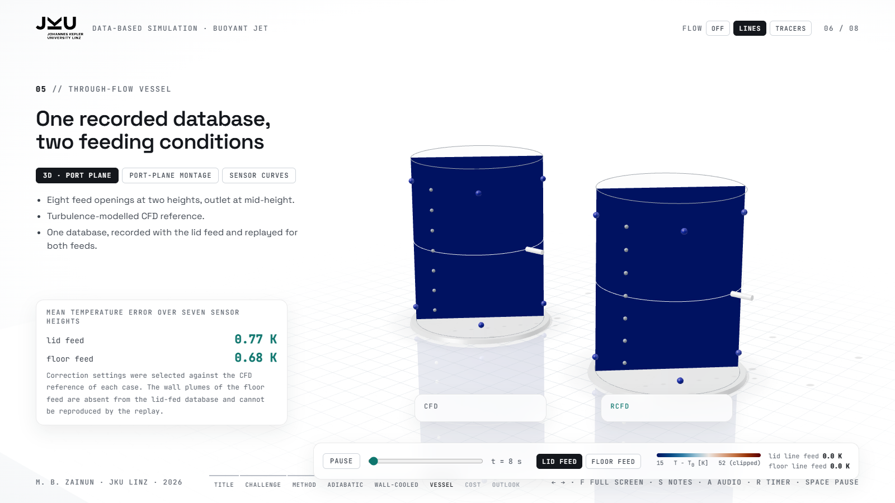
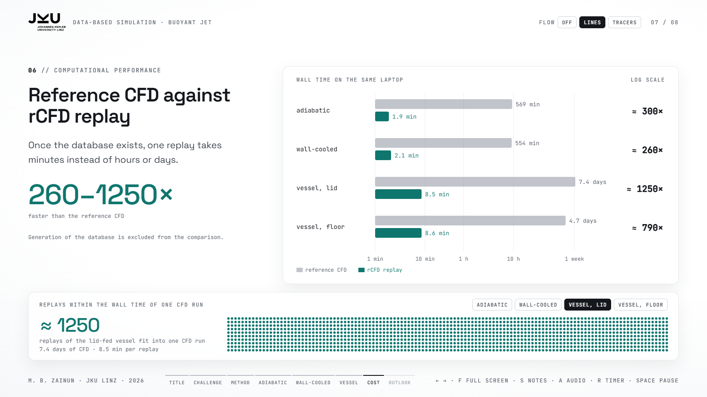
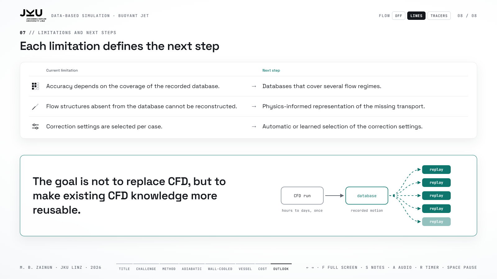

Short talk: Data-based Numerical Simulation of Buoyant Jet Flow
open the deck · PDF guide · 824 words
Whole talk
Slide 1 · Data-based Numerical Simulation of Buoyant Jet Flow0:30

Thank you for the opportunity to present my work.
I would like to present the work I did with my supervisor, Professor Stefan Pirker: Data-based Numerical Simulation of Buoyant Jet Flow.
The question is simple. Can we reuse a recorded flow, even when the temperature itself changes the flow?
- Thanks
- With supervisor Prof. Pirker, thesis title
- Question: reuse a recorded flow when T changes the flow
Slide 2 · The engineering challenge1:00

In conventional CFD, temperature and flow are coupled.
Warm water is lighter, so it rises. This buoyancy changes the velocity, and the velocity carries the temperature again. The buoyancy term in the momentum equation closes this loop.
Recurrence CFD, or rCFD, skips the momentum equations and reuses a recorded flow. This is fast, and it works well when the temperature does not act back on the flow, so when it is a passive scalar. In my cases, it is not passive. The temperature drives the flow.
So I asked three questions. Where does rCFD work? Where does it fail? And how can we improve it?
- Warm is light, rises → velocity → T
- Buoyancy term closes the loop
- rCFD: recorded flow, fine for a passive scalar
- My cases: non-passive, T drives the flow
- Three questions: works, fails, improve
Slide 3 · The rCFD method0:50

Let me briefly explain the method.
First, we run a normal CFD simulation and record how the fluid moves between cells. This recorded motion is stored as cell-to-cell maps.
During the replay, these maps transport the temperature without solving the momentum equations again.
But the recorded maps do not capture all of the mixing. So the method adds face exchange between neighbouring cells, and global conservation then corrects the total energy balance.
In my work, I add one more step, a correction. It sharpens the temperature layers that the replay smears out, and it keeps the total energy unchanged.
- CFD run → cell-to-cell maps
- Replay without momentum equations
- Face exchange, global conservation
- My step: a correction, sharper layers, same energy
Slide 4 · Numerical set-up and the adiabatic case1:00

I started with a small numerical set-up. The main volume is 75 by 75 by 15 millimetres, plus an inlet and an outlet channel, with 85,625 cells of one millimetre.
The inlet Reynolds number is around 100, so the flow is laminar, and we can study the replay errors without turbulence as an additional problem.
The first boundary condition is the adiabatic case. A warm jet enters the cold fluid and forms a warm layer.
On the left you see the CFD, on the right rCFD. In the CFD, the thermocline is 5 millimetres thick at the end of the run. Without the correction, the replay smears this layer to 15.7 millimetres. With the correction, rCFD gives 5.3 millimetres, and the temperature-trace error is 0.70 kelvin.
So in this case, rCFD keeps the thermal stratification of the CFD.
- 75 × 75 × 15 mm + channels, 85 625 cells, 1 mm
- Re ≈ 100, laminar
- Adiabatic: warm jet, temperature layer
- 5.0 mm CFD, 15.7 mm without, 5.3 mm with correction, 0.70 K
Slide 5 · Wall-cooled case1:10

The second is the wall-cooled case. The top wall removes heat. The fluid becomes colder and denser, so it sinks and creates additional motion.
First, I reused the adiabatic database. It removed only about 63 percent of the heat that the CFD removes through the lid. In the montage you can see why. A cold film stays under the lid, and the bulk below stays too warm. The recorded flow never contained the sinking motion, and the correction could not create it.
So I recorded a new database under cooling. Now rCFD removes about 98 percent of the heat. The final mean temperature is within about 0.06 kelvin of the CFD, and the end-profile RMSE is 0.41 kelvin.
One error remains. During the warm inflow, the upper layer fills too slowly, because the replay does not carry all of the convective heat transport.
- Top wall removes heat, cold fluid sinks
- Adiabatic database: 63 %, cold film
- Wall-cooled database: 98 %, 0.06 K, 0.41 K
- Remaining: slow filling, convective transport
Slide 6 · Laboratory vessel0:50

Finally, I tested the method in a laboratory vessel with through-flow.
I recorded one database with the lid feed, and replayed it for both feeds. At seven sensor heights, the mean temperature error is 0.77 kelvin for the lid feed and 0.68 kelvin for the floor feed.
The correction settings were chosen with the CFD of each case, so this is not yet a blind prediction.
The montage shows the limit. In the CFD, the warm floor feed rises along the wall. In rCFD, it follows the recorded path, along the floor and up the centre.
The curves still agree, because the sensors give one temperature per height, and the correction keeps warm water above cold water. So rCFD gets the layering right, but not the path.
- Lab vessel, one lid-fed database for both feeds
- 0.77 K and 0.68 K
- Settings chosen with the CFD, not blind
- Montage: CFD along the wall, rCFD along the floor and up the centre
- Layering right, path wrong
Slide 7 · Computational performance0:35

Once the database exists, rCFD is much faster.
For the adiabatic case, the CFD took about 569 minutes, and the replay about 1.9 minutes. That is around 300 times faster. For the vessel, the CFD took several days, and the replay less than 9 minutes.
These numbers exclude the cost of generating the database. So one CFD run can feed many replays, for example to test different operating conditions, as long as the database covers them.
- 569 → 1.9 min, ≈300×
- Vessel: days → under 9 min
- Database cost excluded, one CFD run feeds many replays
Slide 8 · Limitations and next steps0:45

To summarise. In the adiabatic jet, rCFD keeps the thermocline of the CFD. Under cooling, the database must contain the cooling-driven motion. And in the vessel, one database serves both feeds.
The limits are clear. The results depend on the database, missing flow structures cannot be reconstructed, and the correction settings are still case-dependent.
My next steps would be better database coverage, automatic correction settings, and physics-informed or learning-based corrections.
The goal is not to replace CFD, but to make existing CFD knowledge more reusable. Thank you.
- Three findings
- Limits
- Next steps
- Closing line, thank you